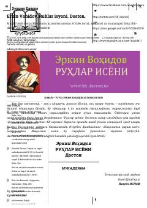

RIHind shoiri Nazrul Islom hayotiga bag'ishlangan isyon va ozodlik dostoni.
Erkin Vohidovning 'Ruhlar isyoni' dostoni XX asrning birinchi yarmida yashab o'tgan hind shoiri Nazrul Islomning hayotiga bag'ishlangan. Doston ozodlik, isyon va ijodkorning ruhiy iztiroblari mavzularini she'riy tarzda ifodalaydi. Bu asar Erkin Vohidov ijodining eng yuksak cho'qqilaridan biri sifatida e'tirof etilgan.